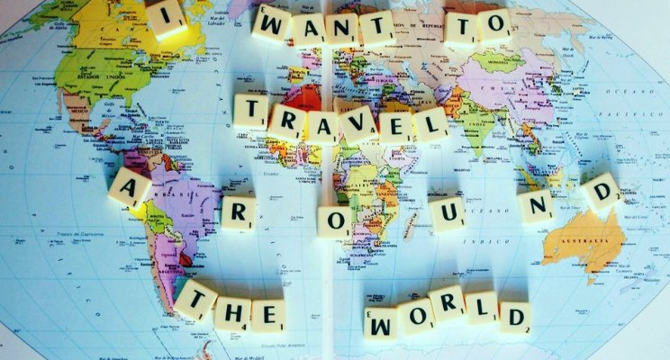
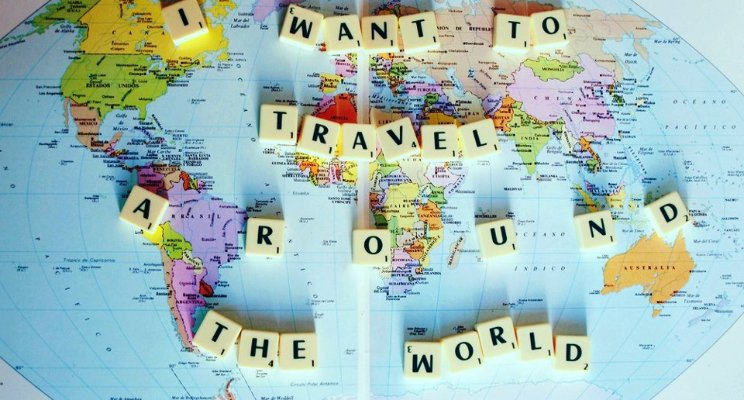

O Canadá é um país norte-americano que se estende desde os EUA, no sul, até o Círculo Polar Ártico, no norte.
Entre suas grandes cidades estão a gigantesca Toronto; Vancouver, centro cinematográfico da costa oeste; Montreal e Québec City, que falam francês; e a capital, Ottawa.
As vastas regiões de natureza selvagem do Canadá compreendem o Parque Nacional de Banff, repleto de lagos nas Montanhas Rochosas.
Abriga também as Cataratas do Niágara, um famoso conjunto de enormes cachoeiras.
O Japão, país insular no Oceano Pacífico, tem cidades densas, palácios imperiais, parques nacionais montanhosos e milhares de santuários e templos. Os trens-bala Shinkansen conectam as principais ilhas: Kyushu (com as praias subtropicais de Okinawa), Honshu (onde ficam Tóquio e a sede do memorial da bomba atômica de Hiroshima) e Hokkaido (famosa como destino para a prática de esqui). Tóquio, a capital, é conhecida por seus arranha-céus e lojas e pela cultura pop
A Inglaterra, local de nascimento de Shakespeare e dos Beatles, é um país nas ilhas britânicas que faz fronteira com a Escócia e o País de Gales. A capital, Londres, situada às margens do rio Tâmisa, abriga o Parlamento, o Big Ben e a Torre de Londres, do século XI. A cidade é também um moderno centro multicultural de artes e negócios. Outras grandes cidades são Manchester, Birmingham, Liverpool, Bristol e os centros universitários de Oxford e Cambridge.
A França, na Europa Ocidental, tem cidades medievais, aldeias alpinas e praias mediterrâneas. Paris, sua capital, é famosa pelas casas de alta costura, museus de arte clássica, como o Louvre, e monumentos como a Torre Eiffel. O país também é conhecido pelos vinhos e pela cozinha sofisticada. Antigos desenhos da caverna de Lascaux, o Teatro Romano de Lyon e o amplo Palácio de Versalhes atestam a sua rica história.